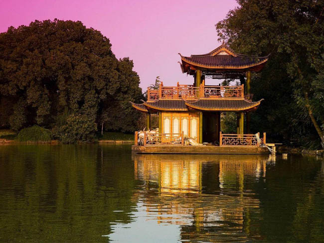

独具特色
西湖园林建设既突出了西湖风景的独特性，又注意了与地方特色相协调的整体性。因此，所有新建和扩建的园林都用大体量的乔灌木丛组成大小不同、疏落有致的空间，重视配置艺术，选择色彩丰富的树木花草作为园林的主景；亭、台、廊、榭等建筑物以及掇山、园林理水，只作为景区的点缀。其体型、姿态、色彩与妩媚、恬淡、宁静的西湖自然景观和宽阔的湖面融成一体，使人工美与自然美有机地结合起来，不仅防止追奇猎古、曲折封闭的气氛，也避免建造林立的大厦和体型庞大的建筑物，取得了明朗、宽广、自然，园内园外浑然一体的效果。